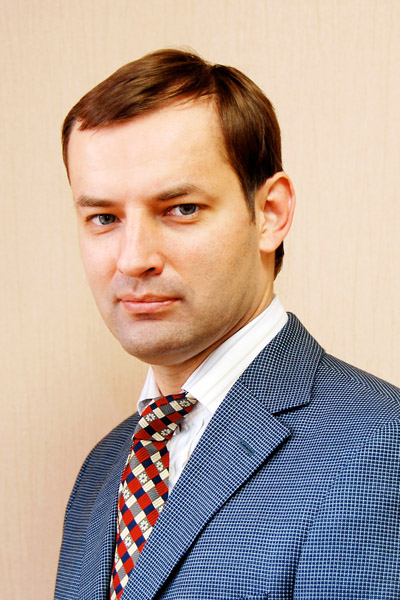

Сотрудники НИИ антимикробной химиотерапии ФГБОУ ВО СГМУ Минздрава России и Межрегиональной ассоциации по клинической микробиологии и антимикробной химиотерапии (МАКМАХ) от всей души поздравляют директора НИИАХ, президента МАКМАХ, главного внештатного специалиста Минздрава России по клинической микробиологии и антимикробной резистентности, руководителя Сотрудничающего центра ВОЗ по укреплению потенциала в сфере надзора и исследований антимикробной резистентности профессора Романа Сергеевича Козлова с избранием на Общем собрании членов Российской академии наук (РАН) 27-28 октября 2016 г. членом-корреспондентом РАН по специальности «Антибиотики».
Глубокоуважаемый Роман Сергеевич!
Примите наши самые искренние поздравления с избранием Вас членом-корреспондентом Российской академии наук (РАН) по специальности «Антибиотики». Итоги голосования на Общем собрании членов РАН 27-28 октября 2016 г. убедительно свидетельствуют о Вашем высоком научном авторитете и большом личном вкладе в работу по изучению проблем антибиотикорезистентности, рационального применения антибиотиков, образовательную и общественную деятельность, направленную на сохранение уникального класса антимикробных препаратов для будущих поколений!
Ваш интеллект, позитивная энергия, деловые, профессиональные и человеческие качества в сочетании с обаянием и харизмой делают Вас незаменимым лидером наших организаций! Мы верим, что под Вашим руководством НИИАХ и МАКМАХ способны преодолеть любые трудности и препятствия!
От всей души желаем Вам крепкого здоровья, долгих лет плодотворной работы, новых важных и интересных проектов, успехов во благо российской медицинской науки и практического здравоохранения!
Сотрудники
НИИ антимикробной химиотерапии ФГБОУ ВО СГМУ Минздрава России
и
Межрегиональной ассоциации по клинической микробиологии и антимикробной химиотерапии (МАКМАХ)
Краткая научная биография профессора Р.С. Козлова

Козлов Роман Сергеевич родился 29 октября 1972 г. в Смоленске. В 1989 г. поступил на лечебный факультет Смоленского государственного медицинского института (ныне — университета), который с отличием закончил в 1995 г.
С 1995 по 1997 г. обучался в клинической ординатуре по клинической фармакологии Смоленской государственной медицинской академии, с 1997 г. по 1999 г. — в очной аспирантуре на кафедре медицинской микробиологии Смоленской государственной медицинской академии.
С 1999 по 2001 гг. — ассистент кафедры микробиологии Смоленской государственной медицинской академии.
В 1999 г. защитил кандидатскую диссертацию на тему «Выбор антибиотиков при нозокомиальных инфекциях в отделениях интенсивной терапии на основе данных многоцентрового исследования резистентности грамотрицательных возбудителей».
В 1999 г. назначен на должность заместителя директора по научной работе НИИ антимикробной химиотерапии СГМА.
С 2001 по 2004 гг. — доцент кафедры микробиологии Смоленской государственной медицинской академии.
В 2004 г. защитил докторскую диссертацию на тему «Пути оптимизации мониторинга, профилактики и фармакотерапии пневмококковых инфекций».
В 2004 г. избран на должность профессора кафедры микробиологии ГОУ ВПО «Смоленская государственная медицинская академия» МЗ РФ, в которой работает по настоящее время.
В 2006 г. присвоено учёное звание профессора по кафедре микробиологии.
В 2006 г. назначен и.о. директора, а затем на должность директора Научно-исследовательского института антимикробной химиотерапии (НИИАХ), в которой работает по настоящее время.
С 2016 г. — руководитель Сотрудничающего центра Всемирной организации здравоохранения (ВОЗ) по развитию потенциала в области проведения исследований и эпидемиологического надзора за резистентностью к антимикробным препаратам.
Является автором 515 научных работ (включая 180 — в зарубежной печати), в том числе 3 монографий, 36 руководств по антибиотикотерапии, 30 пособий для врачей, 11 учебных пособий, 5 справочников, 4 методических указаний, 3 методических рекомендаций и 2 информационных писем. При научном руководстве Р.С. Козлова и консультировании защищены 1 докторская и 15 кандидатских диссертаций.
Р.С. Козлов входит в состав редакционного совета и редакционных коллегий ВАК-рецензируемых журналов «Клиническая микробиология и антимикробная химиотерапия» (КМАХ), «Инфекции в хирургии», «Пульмонология», «Фармакоэкономика. Современная фармакоэкономика и фармакоэпидемиология», «Вестник СГМА», а также индексируемого в SCOPUS журнала «Infectious Diseases in Clinical Practice» (США).
Р.С. Козлов — магистр наук по клинической микробиологии (диплом Лондонского университета от 1.11.1996 г.), победитель конкурса 2009 г. по государственной поддержке научных исследований молодых российских учёных - докторов наук (Грант Президента Российской Федерации), председатель Российского отделения Международного союза за разумное применение антибиотиков (APUA), представитель от Российской Федерации в международной программе «Северное партнёрство», член Экспертного совета по здравоохранению при Комитете Совета Федерации по социальной политике, президент Межрегиональной ассоциации по клинической микробиологии и антимикробной химиотерапии (МАКМАХ), Руководителем научно-методического центра по мониторингу антибиотикорезистентности Федерального агентства по здравоохранению и социальному развитию.
Поздравления: